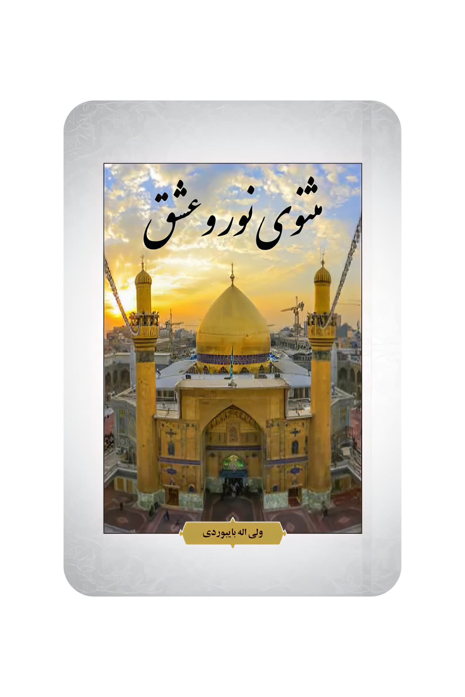

Skip to content
خانه
درباره
کتابها
خانه
درباره
کتابها
مثنوی نور و عشق

از سـتودن او خــدایی مهـربان هر سخنور عاجـز از توصیف آن از شمـارش نعــمت پرورد گـار ناتوان حاسب گرانی هوشـیار از ادای حـــق او درماند گـان سخت کوشانــی مــبارز ای جــوان ژرف اندیشـان ز ادراک خــدا عـاجـزان از ذات ربـانــی دلا ای که غــواصی درون دریای علـم علـم راطالب بـه دور از هــر چـه حـلـم بــر صفـات کـردگـاری حــد لا مـرز لا جـانـا بــه تـوصیـف از خــدا کی تـوان تـوصیف از پـروردگـار کــامـلـی را وصــف نــاقص کــی نـگار بـر خــدا وقتـی معیـن لا دلا آفــریــنش کـایـنـاتـی از خـدا امر یـزدان رحمتی از کـرد گار بـادهایــی در تحـرک ای نگـار چون وتـد، بنگر تمامی کـوه ها بر زمـین کوبیده خالـق ای رهـا تا ز لــرزش ایـــن زمـین آرام هـان از پــریـشانــی بـه دور آرام جـان دین سرآغـازش خـدا آمـد خـدا مـعرفـت حـاصل شنـاســــی حــق را با یقیـن عـلـمـی بـه تـقوا ای رها تحـت فـرمـان خالـقـی یکتـا دلا او کـه بـی همتا احــد واحـد خـدا اعــتـرافـــی مـی کـنـم او ربـنـا ای بــه دیـن اخلاص دایم رو کمال آفـــریــنش یــک نـشانــی از جـلال ذات حـق پــــروردگـاری مـهـربـان لـم یــلــد یــولـد و لـم یــولــد هــمـان بــی کـران نعمت بـه ما بخشیـده جان یک نظـر رؤیـت چـه نعمت بی کران خـالی از جـایـی نباشد در جـهـان خـالـقــی آنـجــا نـبـاشــد ای جــوان بوده خالق از ازل هان تــا ابـد مـا بــشر را مــرگ بـاشـد از احــد بــا تـمـامـی کـایناتــی هســت او هــمـنشیـن آنـان نــبـاشـد ای نکـو فـعل هـر کـاری به فرمان از خدا فـارغ از ابــزار گــیتـی ای رهــا واحـدی بودش به قبل از کاینات واحـدی یـک بـار دیگـر در حـیات خلـقتــی آغــــاز مـــوجــودی پــــدیــــد بیکـران نـعـمـت بـرایـش آفــرید بی نیاز از فکر و هـر انـدیـشه ای خـلـق گـیتی چون درخت از ریشه ای خلـق گـیتـی بک نشان از کردگار بـی نهایت جـلوه گیتـی ای نگار کـــــــرد خــــالـق خـــلـــق عــــــقل آدمــــی گــــفت او را پشــت کــن کــردش هــمی من کی ام حالا تو جانا کیستی گـفت جـانـا من من ام من نیستـی بار دیگر امر کردش کن تو رو رو نمـودش گفت ای خالـق نکو بنده ای هستم ذلیل ای پست کن بس بزرگـی کـردگاری هست کـن علم را گنجینه دارانیم ما ترجمان امـر یزدانیـم ما در زمین معصوم ما ای مردمان امر یـزدان طاعـت از ما هر زمان آسمان ها را زمین را حجت ایم رحـتمت ایـم از سوی خالق رحمت ایم تحت فرمانیم ما ای مردمان امر یـزدان را اطاعـت هر زمان رهنما ماییم ما در هر زمان مردمان را سـوی خالق هـادیان در دل هر مومنی نور امام بس درخشان تر ز خورشیـدی بنـــام هر زمانی مؤمنان شادی کنند از خدایی لحظـه ها یادی کننـــد بین انگشتی بدان جانا تو قلب حافظ اش خالـق بشد شیطان که سلب می کنم شب ذکر خالق سال ها تشنگی را سیـر گـردانـد دلا سد جوعی می دهد پروردگار شــب کنـی بیتـوته جان با کردگار هر که قرآنی کند ختم او رسول در وجـودش باشـدش گنجـی قبـول او نبی گردد به یک شرطی قبول در وجودش وحـی لا همچون رسـول ارحـم الـــراحـم تویی ای بـی نیـــاز درد منـــــــدم درد دارم در نیــــــــــاز شاهدان بینی یکایک جلوه ای همچو خورشیدی درخشان بوده ای آفـرینش کـایناتـی از خـدا در تحیـر کـایـناتــی ای رهـا خلـق عالم را به نو طرح آفـرید بین مـوجـودات آدم شد پــدید با غرایز مختلف هر یک وجــود هــر وجـود از کایناتی در سجود کـاینات آگاه از الطاف حــق داد نـعمت بی کــران بـر مستحـق هـــر تــــولد مـرگ را دانـد خـــدا بـا درون بیـرون اسرار آشنـا او خــدایــــی لـم یلــد یــــــولد دلا بی کـران نعمت به ما بخشد خـدا بـر فضا پــرداخت خلقت ها پـــدید بس شکافـی در فضا او آفـرید آسمــان پــر از هــــوا شد تا زمــــین شد روان آبـی پــدیـدار هـمچنیــن بــس تــلاطــم مــوج از آبـــی پـــدید مـوج را بـر باد طوفانی شـدید کـرد او خالـــق مــــهار ای آشنــــا تحت فـرمان امـر یـزدان بادهـــا کرد تــعیین آب را حـــــدی و مـــرز تـند بــادی آب هـا را لا به هـرز آب دربـــا لا به زیــــرش تــند بــاد هر کدامین یک جهت جنبش بـداد تــــنــد بـادی شــــد نـــمایـــان آب را آن چنان کـــوبیـد درهــم موجها تـند بادی هـمچــو طــوفانــــــی ز راه با چنان شدت وزیـدش بـی پناه امـر بـر طوفان بشد جـــانب جـــهان موج دریا را به هر سویــی روان با هــمـان شــدت نــــمـایان در فضـــا بادهایـی حمـله بــر مــوج آب هـا ساکــن آبـــی را بـــه امــواجـــی دلا روی هم انبار می کرد ای رهـا موج آبی همچو کـــوهی استـــوار قله آبــی شـــد نـمایان ای نگار شــد نــمــایــان روی آبــی کـــف دلا پـخش آبــی تندبــادی در فضــا در هـــــوا بـازی فـضا گــــستــردگــی پخش آبـی را به هـر سمت ای رهـی هــفـت رتـبت آسمـان از آن پــدید تحت فـرمان کـردگاری آفــرید آسمـان سفلـی به امــواجـی مــهار آسمـان عــلیا به سقفـی استوار بـی نیاز از یـــک ستــونــــی آسـمـان همچو کوهی میخ ها محکم همان آسمـان سفلــی به نـــوری انــجمان زیــوری شـد زینتـــی بـر آسمـان چـون چراغی روشنــی بـخـش آفـتـاب در مـدارش ماهتابـی راهیاب هـمچـو پـــرکاری بدان خورشیــد را در تـحرک ثابتـی ظاهر نمـا در تحـرک سقف محکـم بــرقرار گـردشی دارد عجایـب ای نگار آسمـان علیــا شکافیـــدش خــــدا پـر ز گوناگون ملایک هـــــــر کجا از ملایک عــده ای جانا سجـــود عــده ای دیگر رکـوعی لا سجود در صفـی هـان از ملایک عــده ای عـبــد صالح هــر یکی چـون بنده ای عــده ای تسبیح گـویان در سمــا عده ای دیگـر مـداوم در ثنــا در عبادت خــواب از چشمان فــرار اشتباهـی لا ز اینان ای نگار از امینـان وحــی باشد عـده ای از مـلایک عــده ای بـربــنده ای تحـت فـــرمان بـنـدگـان از انبیـا وحـی را ابـلاغ از خالق به ما در تـردد بیــــن خالــق بـنـده ای عــده ای هــان از مـلایک عــده ای عـده ای دیـگـــر مـحــافـظ بندگـان جنتـی را یــک گــــــروهــی حافظان از مـلایک عـــده ای پاهایــشان در زمـین گـردن فـراتـر آسمـان پــا و سر را در نظـــــر فهمـی دلا بـر جهان فایــق هـم اینان حمدها عــرش خالـــــــــق را هم اینان حمل ها زیــرافکــن عیـن را اینان دلا عــزتی دارنـــد اینـان در حجـاب از خـدا گیـرند قـــدرت راهــیــاب از خیالــی وهـم دوری ایـن کسان تحت فرمان کردگاری هـر زمـان لیـــس مثـل لـه خـــدا واحـــد دلا آفــرینش کایناتـی از خــدا شور و شیرین جمع خاکی نــرم و سخت آب را افـزود شــد گل نیک بخت آدمـــی را بهتریــن وجه آفــرید صورتی زیبـا به انسان شد پــدید چـون که بـر پیکــر دمیدش روح را صورتی زیبـا بـه سیــرت شد نـمـا با قــوا انــدیـــشه ای مـحکـــم دلا در تـصرف دیـگران مـوجـود را تحت فـرمان کــردگاری آدمــی با جـوارح عــضوهایـی ای رهـی آدمــی را قــدرتـی تشخیـــص داد حــق و بـاطل را شنـاسد تا به داد بـی نهـایت حــس در آدم پـــدیـد بی کران نعمت بـرایش آفــرید با مـزاجـی مختلف گرمــی و سرد بیـن اضدادی تفاهم او بکـرد خالقی مطلق که واحــد در جهـــان خلق گیتـی را هدایت هــر زمـان از مــلایک خواست عـهدی را به جا در وفـاداری بــه آدم سجده هـا داد عــزت آدمــی را کـــردگار تحت فـرمان الهـی رستـگار آدمــــی را سجده کــــــردند هــر یکی از غــروری عـجب شیـطان لا زکــی کـــرد شیطان افتخــاری بـر خــدا مـن ز آتـش او ز خاکـی پـست ها غـالـب آمــد تیره بختــی هــا بـــر او رد شــد از آزمـونـی پست خـو مهـربان خالــق برایش مهلتـی تا قیـامت روز دادش حکـمتـی مسکنی بــر آدمـــی داد آن خــــــدا زنـدگـی در آن گــوارا لا فنا جـایگاهـی داد آدم را دلا پـر ز نـعمـت امـن جـایــی آشنـا آدمی را داد پنـدی کـردکـار دشمنـی شیــطان بــرایــش آشـکار چون که با نـیکان بدیدش همـنشین در بهـشتـی پـــر ز نعمت راستیـــن از حسـادت داد آدم را فــریـب با چنان تـرفندهـایـی بس غریب از یـقین دوری به شـک انداخت هان عــزم محکـم آدمـی بگسست آن آدمـی تسلـیم شـــیطان شـــد دلا رانـده از درگـاه حـق شــد مـاجــرا روی آدم تـوبه درگاهــش گشــود شـد نـمایان رحمتــی کردش سجـود بر زبان جـاری کـلام رحمـتی بازگشتـی وعـده ای بـر جنتــی منتـقل کرد آدمـی را بر زمـین در حیاتـی آزمونـی هـمچنیـن بــس مـراحل زندگانـی در زمیـن آدمی را داد خـالـق به گـزیــن آدمی را داد فــرزندان ز خاک ابن صالح بس مقامی جلوه پاک پایـبندان عـهد هـر یک انبـیا تا امانت وحی ابلاغـی به ما انبیـا هر یک مبلـغ در جهان حـاملان وحـی بین خوبان و بدان اکـثریت مردمان دور از خـدا کمـتریــن افـراد خـالـق را ثنا دشمنی شد آشـکار ابلـیس هان از خـدا دور آدمی را هـر زمـان جان هـم انداخـت هر یک آدمـی با ریا مکری فـریبـی هـر دمـی انبیـا هـــر یک امانــت وحــــی را یک به یـک ابـلاغ مردم را دلا با رسالـت انبــیا حجـت تمـام آشــکارا عـقل پنهان ای همام معرفـی خلـقت خدا را انـبیا همچـو مهدی این زمین جانب سمـا بـس مراحل طــی بایـد آدمـی از حــوادث دور رنـج آور همـی لا جـدا هـان آدمـی از انبیــا از کـتــابـی آسمانــی لا جــدا انـبیا با حامـیان انــدک زمان از وظایف کـوتهـی لا مردمان از نبی آینـده بـر ما مژده هـــا داده اند بـر ما یکایـک انبیـــا هر تولــد را نـهایت مـرگ هـــــان رفـتگانیم هـر یکـی ای مـردمان عـهد و پیمـان را وفــادار انبیـا ختـم مـرسـل شــد محمـــد مصطفـا از میـان ادیـان دینــی آخـرین دین ختـم الـمـرسلـین شـد به گـزین از میان ادیــان مـذاهب مختـلف دیــن ختـم المرسلین هـمچون الف داد مـردم را ز گــمراهی نـجات بـا حـیـا دیـنـی معـادی را حـیـات آن چـنان تسلـیم دین شد آدمـی از تعـلـق جیـفه دوری هـر دمـی از گرفتــاری شدایـدها رهــا قبض روحـی شد به جـانب ربنــا جانشینـان هـر یکـی از انبیـا بیــن امـت بـه گـزینـان اولیــا بین ما خالـق کتابـتی استوار مستـحـب واجب حـلالـی آشــکار نـا سخــی مـــنسوخ محکـم را دلا با مثـل هایـی ز قــرآن بــرملا مجملی را با بیان عــلم آشـکار بس نکاتی را مـفسر با وقـار آتشــی را وعـــده دادش آن خـدا از گناهانی چه کـم بیشـی جـدا برخــی از اعمـال نیـک آدمـی را پـذیـرا خالـقــی واحــد رهـی ایــن چــه حکمــت آدمــی در روزگــار با شـدایـــد زنـدگانـی رستـگار مـحترم حــج بر شما واجـب دلا کــرد خالــق حج مبـارک بـر شما بر تـمامی مسلمـین شد قبـله گـاه امـن جــایـی مـردمان را جان پنـاه بر بزرگـی قدرت پــروردگــار اعـترافـی در بـرابـر کـعبه یـار برگزیدش مــردمانــی در جــهان تا که دعــوت مردمان را سوی آن هر مــلک برگرد عرشـی در طــــواف کعبه را هان زایرانـی در طـــــواف کعبـه خود هــان وعـده گاهـی بر شما امـن جــایـی در اطاعـت ربنـا بر تمامی مسلـمین گویـا نشـان جـان پناهـی خانه امنـی درجهان بر کسی واجـب زیــارت خانه حـج مال دارد بـس تـوان دوری ز کج ازعبــادت کل هســتی بـی نیـــاز خـالقـی مطلق جهــانـی ای به راز ولی اله بایبوردی
خرید کتاب
مجموع کتاب شامل: ۵۶۵ صفحه۸۰۱ قطعه۱۴۳۹۲ بیتعنوان اصلی اشعار این کتاب؛ شامل خطبهها، نامهها و حکمتهای حضرت علی (ع) است، ۲۴۱ خطبه، ۷۹ نامه و ۴۸۰ حکمت مجموعه نهج البلاغه را تشکیل میدهد که توسط ابوالحسن محمدبن حسین الطاهر المناقب مشهور به سید رضی جمع آوری شده است. مشخصات نهج البلاغه به شرح زیراست: طولانی ترین خطبه، خطبه ۱۹۲ است که به خطبه قاصعه مشهور است. کوتاه ترین خطبه، خطبه ۶۱ است که در مورد خوارج است. طولانی ترین نامه، نامه ۵۳ است که به مالک اشتر نوشتهاند. کوتاه ترین نامه، نامه ۷۹ است که خطاب به فرماندهان لشکر است. طولانی ترین حکمت، حکمت ۱۴۷ است که خطاب به کمیل بن زیاد نخعی نوشتهاند. کوتاه ترین حکمت، حکمت ۱۸۷ است که درباره کوچ کردن ازدنیا است. آخرین جمله نهج البلاغه درباره دوست است. قرآن در نهج البلاغه: ۴۱ بار ذکر شده و ۸۷ آیه از ۴۳ سوره قرآن در نهج البلاغه آورده شده است. همچنین در این کتاب ۱۶ حدیث نبوی گنجانده شده است. این اطلاعات از طریق اینترنت به علاقمندان امام همام آورده شد تا علاقمندان و شیفتگان امامت و ولایت به بهانه منظومه فوق از این کتاب ارزشمند عبرت آموز و ارزنده اطلاعات اولیه کسب نمایند. و چنین شد که در این مجموعه نمود عشق و ایمان در مدت یازده ماه به صورت نظم در آورده شد تا عاشقان امامت و ولایت از یک سو و علاقمندان شعر و ادبیات از سوی دیگر، زمزمه کنندگان کلام زیبای حضرت امیر المومنین علی (ع) باشند. از خداوند متعال برای همه شیعیان، توفیق رهروی خالصانه از طریق آن امام بی بدلیل را خواستارم.
از سـتودن او خــدایی مهـربان هر سخنور عاجـز از توصیف آن از شمـارش نعــمت پرورد گـار ناتوان حاسب گرانی هوشـیار از ادای حـــق او درماند گـان سخت کوشانــی مــبارز ای جــوان ژرف اندیشـان ز ادراک خــدا عـاجـزان از ذات ربـانــی دلا ای که غــواصی درون دریای علـم علـم راطالب بـه دور از هــر چـه حـلـم بــر صفـات کـردگـاری حــد لا مـرز لا جـانـا بــه تـوصیـف از خــدا کی تـوان تـوصیف از پـروردگـار کــامـلـی را وصــف نــاقص کــی نـگار بـر خــدا وقتـی معیـن لا دلا آفــریــنش کـایـنـاتـی از خـدا امر یـزدان رحمتی از کـرد گار بـادهایــی در تحـرک ای نگـار چون وتـد، بنگر تمامی کـوه ها بر زمـین کوبیده خالـق ای رهـا تا ز لــرزش ایـــن زمـین آرام هـان از پــریـشانــی بـه دور آرام جـان دین سرآغـازش خـدا آمـد خـدا مـعرفـت حـاصل شنـاســــی حــق را با یقیـن عـلـمـی بـه تـقوا ای رها تحـت فـرمـان خالـقـی یکتـا دلا او کـه بـی همتا احــد واحـد خـدا اعــتـرافـــی مـی کـنـم او ربـنـا ای بــه دیـن اخلاص دایم رو کمال آفـــریــنش یــک نـشانــی از جـلال ذات حـق پــــروردگـاری مـهـربـان لـم یــلــد یــولـد و لـم یــولــد هــمـان بــی کـران نعمت بـه ما بخشیـده جان یک نظـر رؤیـت چـه نعمت بی کران خـالی از جـایـی نباشد در جـهـان خـالـقــی آنـجــا نـبـاشــد ای جــوان بوده خالق از ازل هان تــا ابـد مـا بــشر را مــرگ بـاشـد از احــد بــا تـمـامـی کـایناتــی هســت او هــمـنشیـن آنـان نــبـاشـد ای نکـو فـعل هـر کـاری به فرمان از خدا فـارغ از ابــزار گــیتـی ای رهــا واحـدی بودش به قبل از کاینات واحـدی یـک بـار دیگـر در حـیات خلـقتــی آغــــاز مـــوجــودی پــــدیــــد بیکـران نـعـمـت بـرایـش آفــرید بی نیاز از فکر و هـر انـدیـشه ای خـلـق گـیتی چون درخت از ریشه ای خلـق گـیتـی بک نشان از کردگار بـی نهایت جـلوه گیتـی ای نگار کـــــــرد خــــالـق خـــلـــق عــــــقل آدمــــی گــــفت او را پشــت کــن کــردش هــمی من کی ام حالا تو جانا کیستی گـفت جـانـا من من ام من نیستـی بار دیگر امر کردش کن تو رو رو نمـودش گفت ای خالـق نکو بنده ای هستم ذلیل ای پست کن بس بزرگـی کـردگاری هست کـن علم را گنجینه دارانیم ما ترجمان امـر یزدانیـم ما در زمین معصوم ما ای مردمان امر یـزدان طاعـت از ما هر زمان آسمان ها را زمین را حجت ایم رحـتمت ایـم از سوی خالق رحمت ایم تحت فرمانیم ما ای مردمان امر یـزدان را اطاعـت هر زمان رهنما ماییم ما در هر زمان مردمان را سـوی خالق هـادیان در دل هر مومنی نور امام بس درخشان تر ز خورشیـدی بنـــام هر زمانی مؤمنان شادی کنند از خدایی لحظـه ها یادی کننـــد بین انگشتی بدان جانا تو قلب حافظ اش خالـق بشد شیطان که سلب می کنم شب ذکر خالق سال ها تشنگی را سیـر گـردانـد دلا سد جوعی می دهد پروردگار شــب کنـی بیتـوته جان با کردگار هر که قرآنی کند ختم او رسول در وجـودش باشـدش گنجـی قبـول او نبی گردد به یک شرطی قبول در وجودش وحـی لا همچون رسـول ارحـم الـــراحـم تویی ای بـی نیـــاز درد منـــــــدم درد دارم در نیــــــــــاز شاهدان بینی یکایک جلوه ای همچو خورشیدی درخشان بوده ای آفـرینش کـایناتـی از خـدا در تحیـر کـایـناتــی ای رهـا خلـق عالم را به نو طرح آفـرید بین مـوجـودات آدم شد پــدید با غرایز مختلف هر یک وجــود هــر وجـود از کایناتی در سجود کـاینات آگاه از الطاف حــق داد نـعمت بی کــران بـر مستحـق هـــر تــــولد مـرگ را دانـد خـــدا بـا درون بیـرون اسرار آشنـا او خــدایــــی لـم یلــد یــــــولد دلا بی کـران نعمت به ما بخشد خـدا بـر فضا پــرداخت خلقت ها پـــدید بس شکافـی در فضا او آفـرید آسمــان پــر از هــــوا شد تا زمــــین شد روان آبـی پــدیـدار هـمچنیــن بــس تــلاطــم مــوج از آبـــی پـــدید مـوج را بـر باد طوفانی شـدید کـرد او خالـــق مــــهار ای آشنــــا تحت فـرمان امـر یـزدان بادهـــا کرد تــعیین آب را حـــــدی و مـــرز تـند بــادی آب هـا را لا به هـرز آب دربـــا لا به زیــــرش تــند بــاد هر کدامین یک جهت جنبش بـداد تــــنــد بـادی شــــد نـــمایـــان آب را آن چنان کـــوبیـد درهــم موجها تـند بادی هـمچــو طــوفانــــــی ز راه با چنان شدت وزیـدش بـی پناه امـر بـر طوفان بشد جـــانب جـــهان موج دریا را به هر سویــی روان با هــمـان شــدت نــــمـایان در فضـــا بادهایـی حمـله بــر مــوج آب هـا ساکــن آبـــی را بـــه امــواجـــی دلا روی هم انبار می کرد ای رهـا موج آبی همچو کـــوهی استـــوار قله آبــی شـــد نـمایان ای نگار شــد نــمــایــان روی آبــی کـــف دلا پـخش آبــی تندبــادی در فضــا در هـــــوا بـازی فـضا گــــستــردگــی پخش آبـی را به هـرسمت ای رهـی هــفـت رتـبت آسمـان از آن پــدید تحت فـرمان کـردگاری آفــرید آسمـان سفلـی به امــواجـی مــهار آسمـان عــلیا به سقفـی استوار بـی نیاز از یـــک ستــونــــی آسـمـان همچو کوهی میخ ها محکــم هـــمان آسمـان سفلــی به نـــوری انــجمان زیــوری شـد زینتـــی بـر آسمـان چـون چراغی روشنــی بـخـش آفـتـاب در مـدارش ماهتابـی راهیاب هـمچـو پـــرکاری بدان خورشیــد را در تـحرک ثابتـی ظاهر نمـا در تحـرک سقف محکـم بــرقرار گـردشی دارد عجایـب ای نگار آسمـان علیــا شکافیـــدش خــــدا پـر ز گوناگون ملایک هـــــــر کجا از ملایک عــده ای جانا سجـــود عــده ای دیگر رکـوعی لا سجود در صفـی هـان از ملایک عــده ای عـبــد صالح هــر یکی چـون بندهای عــده ای تسبیح گـویان در سمــا عده ای دیگـر مـداوم در ثنــا در عبادت خــواب از چشمان فــرار اشتباهـی لا ز اینان ای نگار از امینـان وحــی باشد عـده ای از مـلایک عــده ای بـر بــنده ای تحـت فـــرمان بـنـدگـان از انبیـا وحـی را ابـلاغ از خالق به ما در تـردد بیــــن خالــق بـنـده ای عــده ای هــان ازمـلایک عــده ای عـده ای دیـگـــر مـحــافـظ بندگـان جنتـی را یــک گــــــروهــی حافظان از مـلایک عـــده ای پاهایــشان در زمـین گـردن فـراتـر آسمـان پــا و سر را در نظـــــر فهمـی دلا بـر جهان فایــق هـم اینان حمدها عــرش خالـــــــــق را هم اینان حمل ها زیــرافکــن عیـن را اینان دلا عــزتی دارنـــد اینـان در حجـاب از خـدا گیـرند قـــدرت راهــیــاب از خیالــی وهـم دوری ایـن کسان تحت فرمان کردگاری هـر زمـان لیـــس مثـل لـه خـــدا واحـــد دلا آفــرینش کایناتـی از خــدا شور و شیرین جمع خاکی نــرم و سخت آب را افـزود شــد گل نیک بخت آدمـــی را بهتریــن وجه آفــرید صورتی زیبـا به انسان شد پــدید چـون که بـر پیکــر دمیدش روح را صورتی زیبـا بـه سیــرت شد نـمـا با قــوا انــدیـــشهای مـحکـــم دلا در تـصرف دیـگران مـوجـود را تحت فـرمان کــردگاری آدمــی با جـوارح عــضوهایـی ای رهـی آدمــی را قــدرتـی تشخیـــص داد حــق و بـاطل را شنـاسد تا به داد بـی نهـایت حــس در آدم پـــدیـد بی کران نعمت بـرایش آفــرید با مـزاجـی مختلف گرمــی و سرد بیـن اضدادی تفاهم او بکـرد خالقی مطلق که واحــد در جهـــان خلق گیتـی را هدایت هــر زمـان ازمــلایک خواست عـهدی را به جا در وفـاداری بــه آدم سجده هـا داد عــزت آدمــی را کـــردگار تحت فـرمان الهـی رستـگار آدمــــی را سجده کــــــردند هــر یکی از غــروری عـجب شیـطان لا زکــی کـــرد شیطان افتخــاری بـر خــدا مـن ز آتـش او ز خاکـی پـست ها غـالـب آمــد تیره بختــی هــا بـــر او رد شــد از آزمـونـی پست خـو مهـربان خالــق برایش مهلتـی تا قیـامت روز دادش حکـمتـی مسکنی بــر آدمـــی داد آن خــــــدا زنـدگـی در آن گــوارا لا فنا جـایگاهـی داد آدم را دلا پـر ز نـعمـت امـن جـایــی آشنـا آدمی را داد پنـدی کـردکـار دشمنـی شیــطان بــرایــش آشـکار چون که با نـیکان بدیدش همـنشین در بهـشتـی پـــر ز نعمت راستیـــن از حسـادت داد آدم را فــریـب با چنان تـرفندهـایـی بس غریب از یـقین دوری به شـک انداخت هان عــزم محکـم آدمـی بگسست آن آدمـی تسلـیم شـــیطان شـــد دلا رانـده از درگـاه حـق شــد مـاجــرا روی آدم تـوبه درگاهــش گشــود شـد نـمایان رحمتــی کردش سجـود بر زبان جـاری کـلام رحمـتی بازگشتـی وعـده ای بـر جنتــی منتـقل کرد آدمـی را بر زمـین در حیاتـی آزمونـی هـمچنیـن بــس مـراحل زندگانـی در زمیـن آدمی را داد خـالـق به گـزیــن آدمی را داد فــرزندان ز خاک ابن صالح بس مقامی جلوه پاک پایـبندان عـهد هـر یک انبـیا تا امانت وحی ابلاغـی به ما انبیـا هر یک مبلـغ در جهان حـاملان وحـی بین خوبان و بدان اکـثریت مردمان دور از خـدا کمـتریــن افـراد خـالـق را ثنا دشمنی شد آشـکار ابلـیس هان از خـدا دور آدمی را هـر زمـان جان هـم انداخـت هر یک آدمـی با ریا مکری فـریبـی هـر دمـی انبیـا هـــر یک امانــت وحــــی را یک به یـک ابـلاغ مردم را دلا با رسالـت انبــیا حجـت تمـام آشــکارا عـقل پنهان ای همام معرفـی خلـقت خدا را انـبیا همچـو مهدی این زمین جانب سمـا بـس مراحل طــی بایـد آدمـی از حــوادث دور رنـج آور همـی لا جـدا هـان آدمـی از انبیــا از کـتــابـی آسمانــی لا جــدا انـبیا با حامـیان انــدک زمان از وظایف کـوتهـی لا مردمان از نبی آینـده بـر ما مژده هـــا داده اند بـر ما یکایـک انبیـــا هر تولــد را نـهایت مـرگ هـــــان رفـتگانیم هـریکـی ای مـردمان عـهد و پیمـان را وفــادار انبیـا ختـم مـرسـل شــد محمـــد مصطفـا از میـان ادیـان دینــی آخـرین دین ختـم الـمـرسلـین شـد به گـزین از میان ادیــان مـذاهب مختـلف دیــن ختـم المرسلین هـمچون الف داد مـردم را ز گــمراهی نـجات بـا حـیـا دیـنـی معـادی را حـیـات آن چـنان تسلـیم دین شد آدمـی از تعـلـق جیـفه دوری هـر دمـی از گرفتــاری شدایـدها رهــا قبض روحـی شد به جـانب ربنــا جانشینـان هـر یکـی از انبیـا بیــن امـت بـه گـزینـان اولیــا بین ما خالـق کتابـتی استوار مستـحـب واجب حـلالـی آشــکار نـا سخــی مـــنسوخ محکـم را دلا با مثـل هایـی ز قــرآن بــرملا مجملی را با بیان عــلم آشـکار بس نکاتی را مـفسر با وقـار آتشــی را وعـــده دادش آن خـدا از گناهانی چه کـم بیشـی جـدا برخــی از اعمـال نیـک آدمـی را پـذیـرا خالـقــی واحــد رهـی ایــن چــه حکمــت آدمــی در روزگــار با شـدایـــد زنـدگانـی رستـگار مـحترم حــج بر شما واجـب دلا کــرد خالــق حج مبـارک بـر شما بر تـمامی مسلمـین شد قبـله گـاه امـن جــایـی مـردمان را جان پنـاه بر بزرگـی قدرت پــروردگــار اعـترافـی در بـرابـر کـعبه یـار برگزیدش مــردمانــی در جــهان تا که دعــوت مردمان را سوی آن هر مــلک برگرد عرشـی در طــــواف کعبه را هان زایرانـی در طـــــواف کعبـه خود هــان وعـده گاهـی بر شما امـن جــایـی در اطاعـت ربنـا بر تمامی مسلـمین گویـا نشـان جـان پناهـی خانه امنـی درجهان بر کسی واجـب زیــارت خانه حـج مال دارد بـس تـوان دوری ز کج ازعبــادت کل هســتی بـی نیـــاز خـالقـی مطلق جهــانـی ای به راز ولی اله بایبوردی